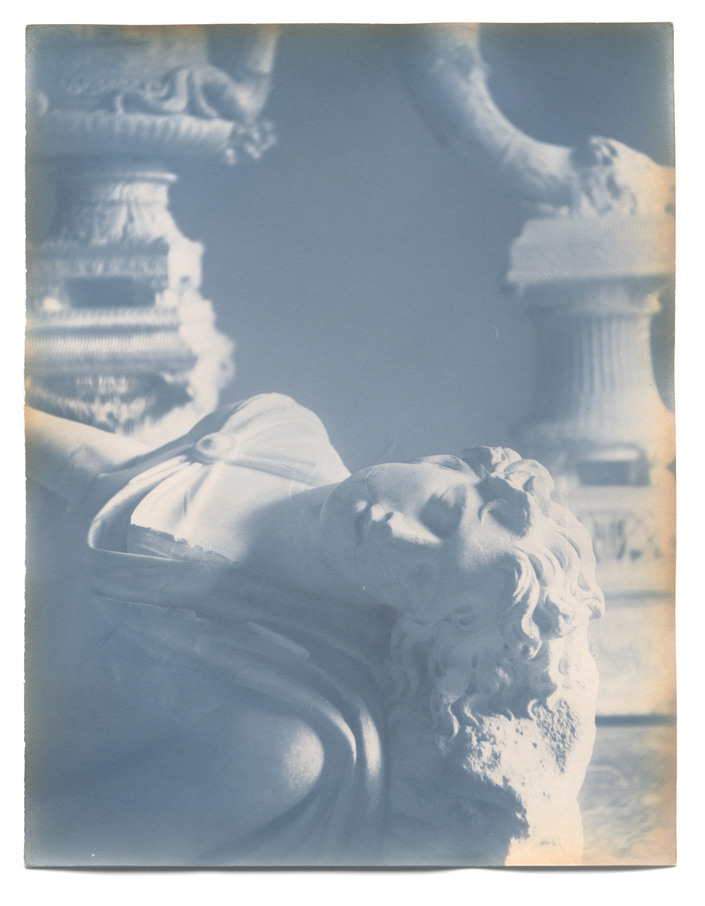

Silver svärtas av ljus, görs okänsligt, förädlas i ett bad av guld (sel d'or)
Det är i fotografins tekniska ungdom som dess sammanflätning med tid är tydligast. Därför lämpar sig glasnegativet för konstnärliga studier av denna koppling. Det finns en potential i den negativa avbilden: en oförlöst urbild som kan ge upphov till något. Så uppstår, ur genomlysning, en svit av miniatyrsubjekt. Närsomhelst kan potentialen förverkligas, genom fotografins sista stadium: silver svärtas av ljus, görs okänsligt, förädlas i ett bad av guld (sel d’or) – delar av silvret ersätts av den renaste metallen. Subjektet är odödliggjort.